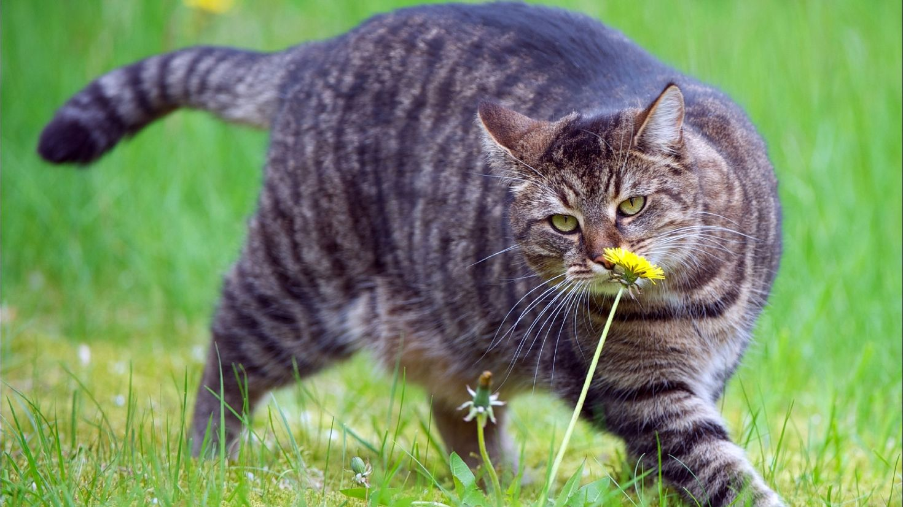

Привіт! Мене звати Кіт Мурко!
Характеристики:
- Колір хутра - сіро-тигровий.
- Колір очей - зелений.
- Вага - 5кг розкоші.
- Озброєння - сталеві кігті та ікла.
- Максимальна швидкість руху - 40 км/год.
- Тип пального - смаколики.
Про мене
Кішка (лат. Felis catus) - домашня тварина, одна з найбільш популярних «тварин-компаньйонів».
З погляду наукової систематики, домашня кішка — ссавець сімейства котячих загону хижих. Одні дослідники розглядають домашню кішку як підвид дикої кішки, інші – як окремий біологічний вид.
Як одиночний мисливець на гризунів та інших дрібних тварин, кішка — соціальна тварина, що використовує для спілкування широкий діапазон звукових сигналів, а також феромони і рухи тіла.
В даний час у світі налічується близько 600 млн домашніх котів , виведено близько 200 порід, від довгошерстих (перська кішка) до позбавлених вовни (сфінкси), визнаних та зареєстрованих різними фелінологічними організаціями.
Протягом 10 000 років кішки цінуються людиною, зокрема за здатність полювати гризунів та інших домашніх шкідників, і навіть за вміння розважати і втішати детей.
Хобі:
- Їсти смаколики
- Грітись на сонечку
- Точити кігті
- Гратись і бавитись, зходити з розуму, коли всі сплять.